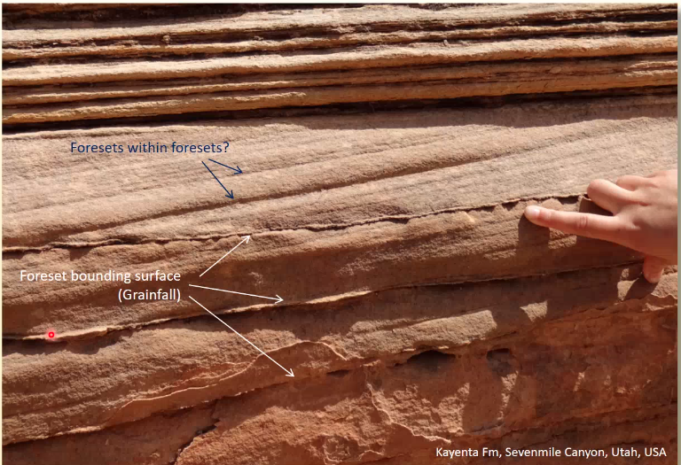

Aeolian
Created Tuesday 16 February 2021
@GEOLOGY @PETROLOGY @YEAR2 @sedimentology
@aeolian enrionments are those where wind is the dominant sdeiment transport process, which usually means @deserts
A @deserts specifically means an environment where significantly more water is lost than is gained
Hot deserts
Differences between wet and dry sedimentology:
The dunes have a very sharp crest line because the stoss is convex and the lee is concave ≠ wet @bedform
The crest lines are also slightly wiggly.
The lee slopes have two parts: the lee, and the @dune_plinth at a lower angle
Unlike subaqueous bedforms, the dunes are separated by flat @Interdunes where moisture can collect
| Air | Water | Notes | |
|---|---|---|---|
| Density | 1.3 | 1000 | Turbulence much less important |
| Competence | Med sand or less | ||
| Effective density of quartz | 2648.7 | 1650 | |
| Terminal settling velocity of coarse sand | 8 | 0.15 | Hard to keep in suspension |
| Fluid density | 100-100,000 | 10 | |
| Fluid capacity | Very high | VOlume of sediment it can carry | |
| Driving force | Air mass density | Gravity | Air mass can vary locally and sediment can travel uphill |
@effective_density
Sets are generally much larger, and often have contradictory directions
Sediment Texture
Sand grade
Very well sorted
Very round
Spherical (because they are made of quartz which has no cleavage)
Clast supported
'Sand' colour
Often called @millet_seed_grains
Bedforms
@Ripples form a separate population from the dunes with a gap in the middle
Transport Agents
Suspension in air does happen but is insignificant compared to bedload transport, and only happens with the finest grained material i.e. dust → settling
Bedload transport happens by @reptation and @Saltation (the main one).
Grains moving in the air bump into each other and give each other kinetic energy
When one falls onto the ground, it sends another one flying.
The collisions from saltation are why the grains are so rounded
This makes the air abrasive → unique landforms with sharp edges and faces. This is the only process that makes sediment more angular. @Ventifract
Grains can be reptated up and over other sediments → coarse grained crests and fine grained troughs⬇️ @ballistic_ripples
This means that @cross_lamination cannot happen in aeolian environments
Ballistic ripples create a texture which looks like @primary_current_lineation but is in fact not.
@Pinstriping is a result of ballistic rippling
Dune types
@barchan_dunes
@Parabolic_dunes
@Oblique_dunes
@Seif_dunes
@Barchanoid_dunes or @sinuous_dunes
@Star_dunes
@Dome_dunes
@Transverse_dunes are those where the crest is perpendicular to the flow
When the sediment falls down the slope, it doesn't go back into suspension ≠subsqueous bedforms → it is a @grain_flow → moderate @reverse_grading
@Grainfall is a continuous process but grain flow is episodic
Thick grain fall separated by thin layer of grain flow
Dune facies Successions
Sediments are well sorted → not much variation
Key indicators of Aeolian Environments
@grain_flow (how material moves up stoss ≠ @Grainfall that falls down the lee
@dune_plinth and ripples thereupon
@millet_seed_grains
Large Sets
Interdunes
Dunes are not continuous; the lee does not meet the stoss → flat gap between dunes
@Interdunes
Types of Interdune:
These can cause @Adhesion_warts where dry sand blowing across the surface sticks to the wet sand and builds up warts. Not well preserved.
Interdune Facies Succession
Facies successions show a drying upwards trend
Grain size also becomes more coarse moving upwards
Preservation
Relatively little of aeloian systems are actually preserved
Because deposition means a CHANGE, anything at is preserved does not necessarily representwhat happened day to day.
Interdune Bounding Surfaces
@Interdune_bounding_surfaces separate the dunes from the interdune deposits. Large, and cut through all other @bounding_surfaces
@Dune_bounding_surface separate dunes from other dunes, without an interdune inbetween
⬇️The thin lines are grain falls → the wider ones are grain flows. Each couple represents a @foreset , but there are foresets within the foresets. This is unique to aeolian environments and is a result of @superimposition (where smaller bedforms climb over each other and over larger bedforms).

This means that the original foresets get buried and a @superimposition_surface is formed.
@Reactivation_surfaces can happen then the top of a dune is stripped by wind and a surface previously covered surface becomes a deposition surface again.
Wind generally cuts through forsets at an acute angle
@Supersurfaces are at the top of the heirarchy and cut all other bounding surfaces. Usually represent a kind of @unconformities
@Bypass_Supersurfaces = @Flooding_Supersurfces
@Deflation_Supersurfaces happen when the @carrying_capacity os wind is higher than the amount of avaliable sediment → layer of the desert is stripped away. Often results in expanses of large stones and @Ventifract